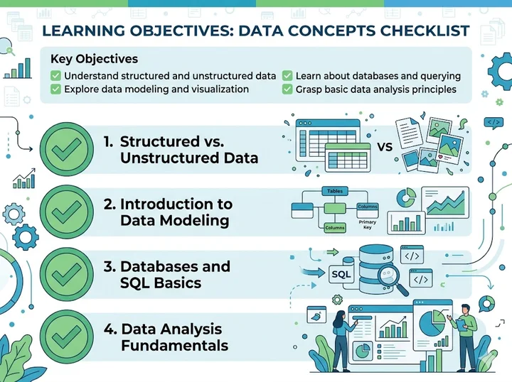
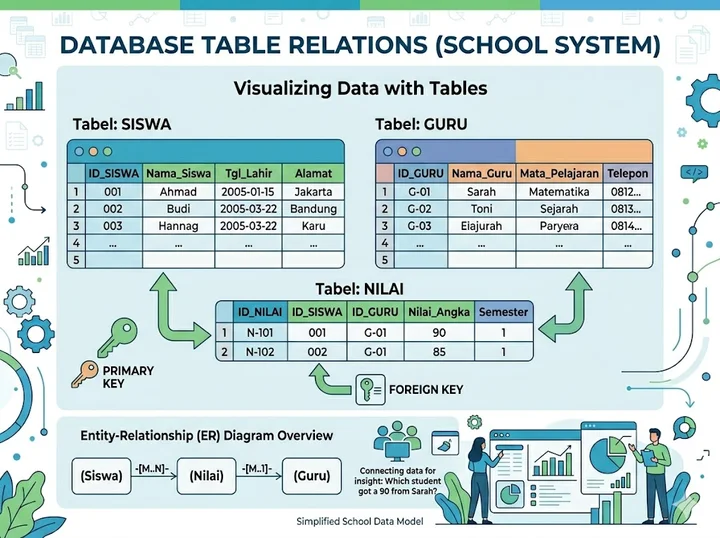
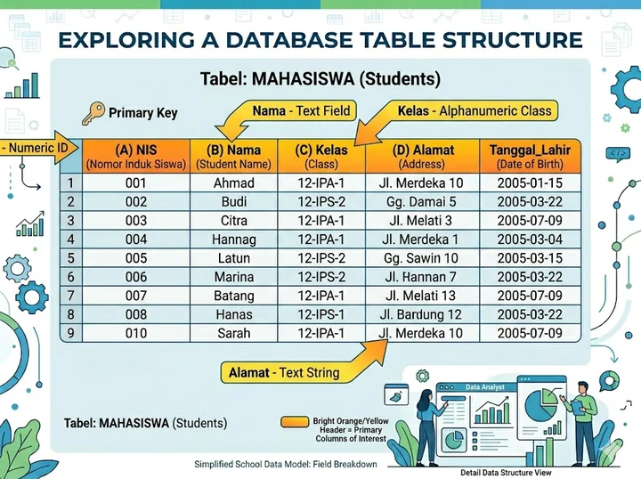
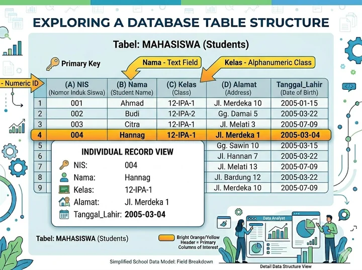
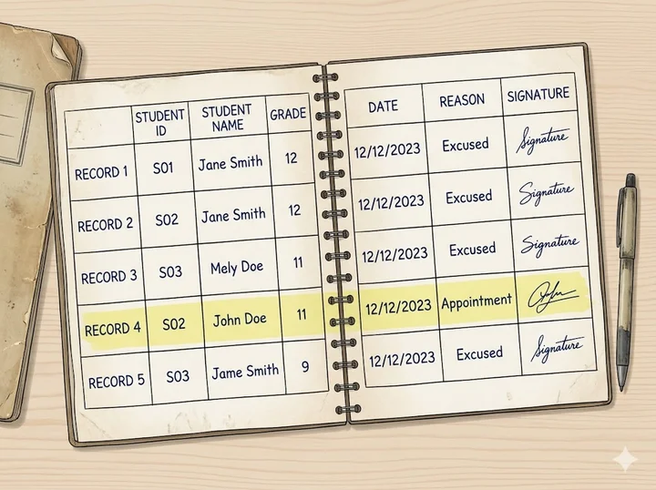
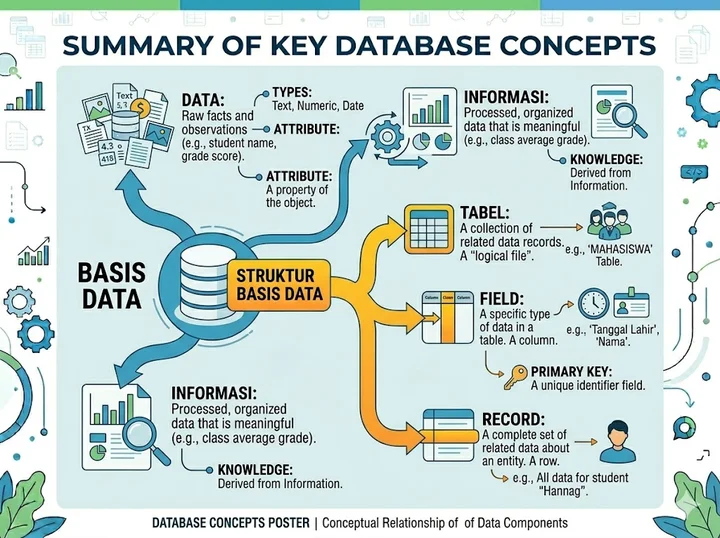

Mata Pelajaran Informatika
Capaian Pembelajaran
Menjelaskan pengertian data dan basis data
Membedakan data mentah dengan informasi
Menyebutkan contoh basis data dalam kehidupan sehari-hari
Mengidentifikasi struktur basis data: tabel, field, dan record

Data adalah kumpulan fakta mentah yang belum diolah dan belum memiliki makna tersendiri.
💡 Data baru menjadi informasi ketika sudah diolah dan punya konteks. Contoh: "Nilai Matematika Budi adalah 85."
Perbandingan yang Perlu Dipahami
| Data | Informasi | |
|---|---|---|
| Bentuk | Mentah, belum diolah | Sudah diolah |
| Makna | Belum jelas | Memiliki arti |
| Contoh | 85, Budi, X-A | "Budi dari kelas X-A mendapat nilai 85" |
| Kegunaan | Bahan baku | Bahan keputusan |
Basis data (database) adalah kumpulan data yang terorganisir, disimpan secara sistematis, dan dapat diakses serta dikelola dengan mudah.
Bayangkan basis data seperti lemari arsip digital — semua dokumen tersimpan rapi, berlabel, dan mudah dicari kapan saja.
Basis data dikelola oleh perangkat lunak khusus yang disebut DBMS (Database Management System).
Tanpa sadar, kita berinteraksi dengan basis data setiap hari
| Tempat | Data yang Disimpan |
|---|---|
| 🏫 Sekolah | Data siswa, nilai, absensi |
| 🏥 Rumah Sakit | Data pasien, rekam medis |
| 🏦 Bank | Data nasabah, transaksi |
| 🛒 Toko Online | Data produk, pesanan, pelanggan |
| 📱 Media Sosial | Data profil, postingan, pertemanan |
BASIS DATA
└── TABEL
├── FIELD (Kolom)
└── RECORD (Baris)Ketiga komponen ini bekerja bersama untuk menyimpan dan mengorganisir data secara terstruktur. Mari kita pelajari satu per satu!
Tabel adalah struktur utama dalam basis data. Bentuknya seperti tabel di Microsoft Excel — memiliki baris dan kolom.

Contoh Tabel dalam Basis Data
| NIS | Nama | Kelas | Alamat |
|---|---|---|---|
| 001 | Budi Santoso | X-A | Jakarta |
| 002 | Ani Rahayu | X-B | Bogor |
| 003 | Dian Pratama | X-A | Depok |
👆 Inilah tampilan sebuah tabel dalam basis data. Setiap kolom disebut field, dan setiap baris disebut record.
Field adalah kolom dalam tabel yang menentukan jenis informasi apa yang disimpan.
| NIS | Nama | Kelas | Alamat |
|---|---|---|---|
| (field) | (field) | (field) | (field) |
| 001 | Budi Santoso | X-A | Jakarta |

Jenis-jenis Data yang Bisa Disimpan
| Tipe Data | Keterangan | Contoh |
|---|---|---|
| TEXT / VARCHAR | Teks bebas | Nama, Alamat |
| INTEGER | Bilangan bulat | Usia, Jumlah |
| DECIMAL | Bilangan desimal | Nilai, Harga |
| DATE | Tanggal | Tanggal Lahir |
| BOOLEAN | Benar/Salah | Status Aktif |
💡 Tipe data penting agar data tersimpan dengan benar dan efisien.
Record adalah satu baris dalam tabel yang berisi data lengkap dari satu entitas/objek.
| NIS | Nama | Kelas | Alamat |
|---|---|---|---|
| 001 | Budi Santoso | X-A | Jakarta |
| 002 | Ani Rahayu | X-B | Bogor |
👆 Baris yang ditebalkan adalah satu record — yaitu data lengkap milik Budi Santoso.
Satu record = satu "orang" / "barang" / "kejadian" yang datanya disimpan.

| Komponen | Analogi | Fungsi |
|---|---|---|
| 🗄️ Tabel | Lembar kerja Excel | Menyimpan satu jenis data |
| 📋 Field | Judul kolom | Menentukan kategori data |
| 📄 Record | Satu baris isi | Menyimpan satu data lengkap |
Bayangkan buku absensi kelas:

Sebuah basis data sekolah bisa memiliki beberapa tabel
| NIS | Nama | Kelas |
|---|---|---|
| 001 | Budi | X-A |
| 002 | Ani | X-B |
| NIS | Mata Pelajaran | Nilai |
|---|---|---|
| 001 | Matematika | 85 |
| 002 | Informatika | 90 |
Kedua tabel terhubung melalui kolom NIS — inilah kekuatan basis data!
Hari ini kamu telah belajar bahwa:
Data adalah fakta mentah; menjadi informasi setelah diolah
Basis data adalah kumpulan data yang tersimpan secara terstruktur dan sistematis
Struktur basis data terdiri dari:
Basis data digunakan di mana-mana: sekolah, rumah sakit, bank, toko online

Pilih jawabanmu di atas!
Perhatikan tabel berikut:
| NIS | Nama | Kelas |
|---|---|---|
| 001 | Budi | X-A |
| 002 | Ani | X-B |
Pilih jawabanmu di atas!
Pilih jawabanmu di atas!
"Data adalah bahan bakar dunia digital — dan kamu baru saja belajar cara menyimpannya dengan benar."